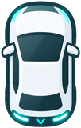

처음
50m
100m
도보 편도
자동
시연 9곳
채비스테이
한가한 곳
붐비는 곳
▲
19시
이용률
▼
범례
일반
위성
표시 색 = 선택한 시각의 이용률
10% 미만
10~25%
25~50%
50~75%
75% 이상
기록 없음
테두리 = 충전소 종류
급속 (남색 동그라미)
채비스테이 (주황 굵은 테두리)
시연 충전소 (도보 범위)

내 위치
길안내를 시작합니다.
＋
－
전체
내 위치로
종료
종료
내 위치에서 도보
충전소에서 도보
목록 보기
주변
지금 충전소